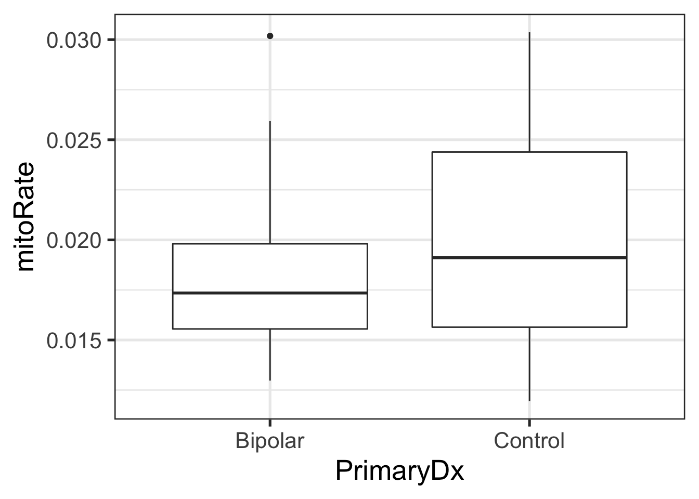
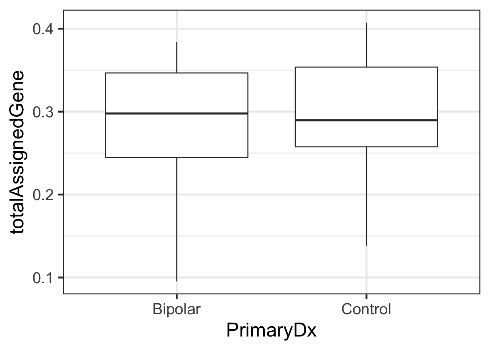
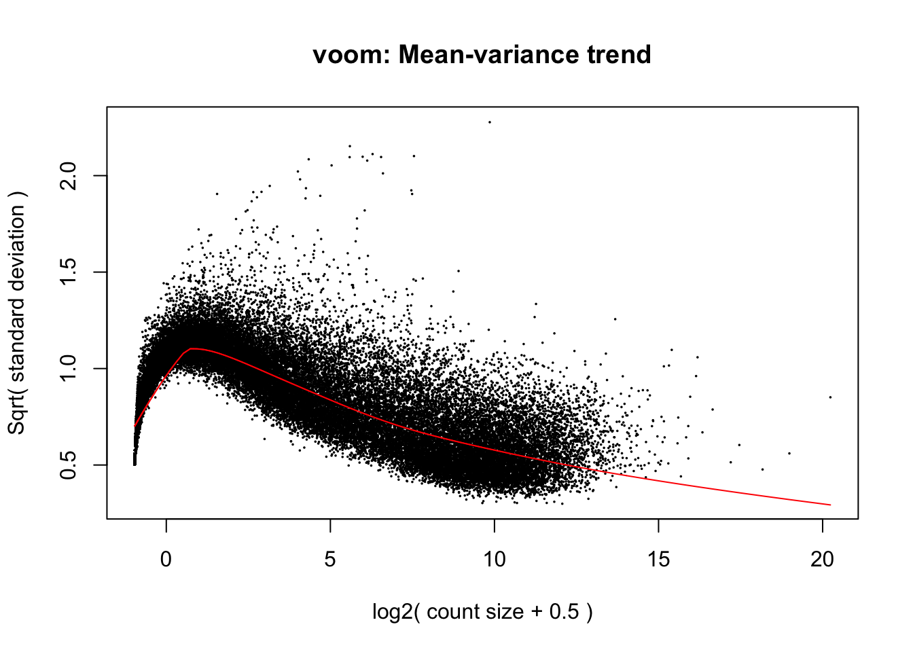

6 Revisión
- ¿Debemos explorar las relaciones entre nuestras variables?
Sí y depende de eso podemos elegir el modelo
* ¿Por qué usamos el paquete edgeR?
Sirve para normalizar los datos
Nos permite eliminar el composition bias
- ¿Por qué es importante el argumento
sort.byentopTable()? queriamos preservar el orden original para que los renglones del objeto rse tengan el mismo orden de la tabla - ¿Por qué es importante el argumento
coefentopTable()? Es el coeficiente de interés lo que corresponde a model.matrix con la que creamos la matriz del diseño estadístico
Usemos los datos de http://research.libd.org/SPEAQeasy-example/bootcamp_intro
speaqeasy_data <- file.path(tempdir(), "rse_speaqeasy.RData")
download.file("https://github.com/LieberInstitute/SPEAQeasy-example/blob/master/rse_speaqeasy.RData?raw=true", speaqeasy_data, mode = "wb")
library("SummarizedExperiment")
# cargamos los datos y con verbose R nos avisa cuales son los nombres de los objetos
load(speaqeasy_data, verbose = TRUE)## Loading objects:
## rse_gene## class: RangedSummarizedExperiment
## dim: 60609 40
## metadata(0):
## assays(1): counts
## rownames(60609): ENSG00000223972.5 ENSG00000227232.5 ... ENSG00000210195.2 ENSG00000210196.2
## rowData names(10): Length gencodeID ... NumTx gencodeTx
## colnames(40): R13896_H7JKMBBXX R13903_HCTYLBBXX ... R15120_HFY2MBBXX R15134_HFFGHBBXX
## colData names(67): SAMPLE_ID FQCbasicStats ... AgeDeath BrNum- ¿Cuantos genes y muestras tenemos en estos datos? genes tenemos 60606 muestras 40 ¿Cuantas variables de info en nuestras muestras? colData names (67)
- ¿Hay diferencias en
totalAssignedGeneomitoRateentre los grupos de diagnosis (PrimaryDx)?
## NULL## [1] FALSE FALSE FALSE FALSE FALSE FALSE FALSE FALSE FALSE FALSE FALSE FALSE FALSE FALSE FALSE FALSE FALSE FALSE FALSE
## [20] FALSE FALSE FALSE FALSE FALSE FALSE FALSE FALSE FALSE FALSE FALSE FALSE FALSE FALSE FALSE FALSE FALSE FALSE FALSE
## [39] FALSE FALSE## [1] Bipolar Bipolar Bipolar Bipolar Control Control Control Control Control Control Control Control Control Bipolar
## [15] Bipolar Bipolar Control Control Control Bipolar Bipolar Control Bipolar Bipolar Bipolar Bipolar Control Control
## [29] Control Bipolar Bipolar Bipolar Control Control Bipolar Bipolar Bipolar Bipolar Control Control
## Levels: Bipolar Control Otherlibrary("ggplot2")
ggplot(as.data.frame(colData(rse_gene)), aes(y = mitoRate, x = PrimaryDx)) +
geom_boxplot() +
theme_bw(base_size = 20) +
ylab("mitoRate") +
xlab("PrimaryDx")
ggplot(as.data.frame(colData(rse_gene)), aes(y = totalAssignedGene, x = PrimaryDx)) +
geom_boxplot() +
theme_bw(base_size = 20) +
ylab("totalAssignedGene") +
xlab("PrimaryDx")
- Grafica la expresión de SNAP25 para cada grupo de diagnosis.
## class: RangedSummarizedExperiment
## dim: 60609 40
## metadata(0):
## assays(1): counts
## rownames(60609): ENSG00000223972.5 ENSG00000227232.5 ... ENSG00000210195.2 ENSG00000210196.2
## rowData names(10): Length gencodeID ... NumTx gencodeTx
## colnames(40): R13896_H7JKMBBXX R13903_HCTYLBBXX ... R15120_HFY2MBBXX R15134_HFFGHBBXX
## colData names(67): SAMPLE_ID FQCbasicStats ... AgeDeath BrNum## [1] FALSE FALSE FALSE FALSE FALSE FALSE FALSE FALSE FALSE FALSE FALSE FALSE FALSE FALSE FALSE FALSE FALSE FALSE FALSE
## [20] FALSE FALSE FALSE FALSE FALSE FALSE FALSE FALSE FALSE FALSE FALSE FALSE FALSE FALSE FALSE FALSE FALSE FALSE FALSE
## [39] FALSE FALSE FALSE FALSE FALSE FALSE FALSE FALSE FALSE FALSE FALSE FALSE FALSE FALSE FALSE FALSE FALSE FALSE FALSE
## [58] FALSE FALSE FALSE FALSE FALSE FALSE FALSE FALSE FALSE FALSE FALSE FALSE FALSE FALSE FALSE FALSE FALSE FALSE FALSE
## [77] FALSE FALSE FALSE FALSE FALSE FALSE FALSE FALSE FALSE FALSE FALSE FALSE FALSE FALSE FALSE FALSE FALSE FALSE FALSE
## [96] FALSE FALSE FALSE FALSE FALSE FALSE FALSE FALSE FALSE FALSE FALSE FALSE FALSE FALSE FALSE FALSE FALSE FALSE FALSE
## [115] FALSE FALSE FALSE FALSE FALSE FALSE FALSE FALSE FALSE FALSE FALSE FALSE FALSE FALSE FALSE FALSE FALSE FALSE FALSE
## [134] FALSE FALSE FALSE FALSE FALSE FALSE FALSE FALSE FALSE FALSE FALSE FALSE FALSE FALSE FALSE FALSE FALSE FALSE FALSE
## [153] FALSE FALSE FALSE FALSE FALSE FALSE FALSE FALSE FALSE FALSE FALSE FALSE FALSE FALSE FALSE FALSE FALSE FALSE FALSE
## [172] FALSE FALSE FALSE FALSE FALSE FALSE FALSE FALSE FALSE FALSE FALSE FALSE FALSE FALSE FALSE FALSE FALSE FALSE FALSE
## [191] FALSE FALSE FALSE FALSE FALSE FALSE FALSE FALSE FALSE FALSE FALSE FALSE FALSE FALSE FALSE FALSE FALSE FALSE FALSE
## [210] FALSE FALSE FALSE FALSE FALSE FALSE FALSE FALSE FALSE FALSE FALSE FALSE FALSE FALSE FALSE FALSE FALSE FALSE FALSE
## [229] FALSE FALSE FALSE FALSE FALSE FALSE FALSE FALSE FALSE FALSE FALSE FALSE FALSE FALSE FALSE FALSE FALSE FALSE FALSE
## [248] FALSE FALSE FALSE FALSE FALSE FALSE FALSE FALSE FALSE FALSE FALSE FALSE FALSE FALSE FALSE FALSE FALSE FALSE FALSE
## [267] FALSE FALSE FALSE FALSE FALSE FALSE FALSE FALSE FALSE FALSE FALSE FALSE FALSE FALSE FALSE FALSE FALSE FALSE FALSE
## [286] FALSE FALSE FALSE FALSE FALSE FALSE FALSE FALSE FALSE FALSE FALSE FALSE FALSE FALSE FALSE FALSE FALSE FALSE FALSE
## [305] FALSE FALSE FALSE FALSE FALSE FALSE FALSE FALSE FALSE FALSE FALSE FALSE FALSE FALSE FALSE FALSE FALSE FALSE FALSE
## [324] FALSE FALSE FALSE FALSE FALSE FALSE FALSE FALSE FALSE FALSE FALSE FALSE FALSE FALSE FALSE FALSE FALSE FALSE FALSE
## [343] FALSE FALSE FALSE FALSE FALSE FALSE FALSE FALSE FALSE FALSE FALSE FALSE FALSE FALSE FALSE FALSE FALSE FALSE FALSE
## [362] FALSE FALSE FALSE FALSE FALSE FALSE FALSE FALSE FALSE FALSE FALSE FALSE FALSE FALSE FALSE FALSE FALSE FALSE FALSE
## [381] FALSE FALSE FALSE FALSE FALSE FALSE FALSE FALSE FALSE FALSE FALSE FALSE FALSE FALSE FALSE FALSE FALSE FALSE FALSE
## [400] FALSE FALSE FALSE FALSE FALSE FALSE FALSE FALSE FALSE FALSE FALSE FALSE FALSE FALSE FALSE FALSE FALSE FALSE FALSE
## [419] FALSE FALSE FALSE FALSE FALSE FALSE FALSE FALSE FALSE FALSE FALSE FALSE FALSE FALSE FALSE FALSE FALSE FALSE FALSE
## [438] FALSE FALSE FALSE FALSE FALSE FALSE FALSE FALSE FALSE FALSE FALSE FALSE FALSE FALSE FALSE FALSE FALSE FALSE FALSE
## [457] FALSE FALSE FALSE FALSE FALSE FALSE FALSE FALSE FALSE FALSE FALSE FALSE FALSE FALSE FALSE FALSE FALSE FALSE FALSE
## [476] FALSE FALSE FALSE FALSE FALSE FALSE FALSE FALSE FALSE FALSE FALSE FALSE FALSE FALSE FALSE FALSE FALSE FALSE FALSE
## [495] FALSE FALSE FALSE FALSE FALSE FALSE FALSE FALSE FALSE FALSE FALSE FALSE FALSE FALSE FALSE FALSE FALSE FALSE FALSE
## [514] FALSE FALSE FALSE FALSE FALSE FALSE FALSE FALSE FALSE FALSE FALSE FALSE FALSE FALSE FALSE FALSE FALSE FALSE FALSE
## [533] FALSE FALSE FALSE FALSE FALSE FALSE FALSE FALSE FALSE FALSE FALSE FALSE FALSE FALSE FALSE FALSE FALSE FALSE FALSE
## [552] FALSE FALSE FALSE FALSE FALSE FALSE FALSE FALSE FALSE FALSE FALSE FALSE FALSE FALSE FALSE FALSE FALSE FALSE FALSE
## [571] FALSE FALSE FALSE FALSE FALSE FALSE FALSE FALSE FALSE FALSE FALSE FALSE FALSE FALSE FALSE FALSE FALSE FALSE FALSE
## [590] FALSE FALSE FALSE FALSE FALSE FALSE FALSE FALSE FALSE FALSE FALSE FALSE FALSE FALSE FALSE FALSE FALSE FALSE FALSE
## [609] FALSE FALSE FALSE FALSE FALSE FALSE FALSE FALSE FALSE FALSE FALSE FALSE FALSE FALSE FALSE FALSE FALSE FALSE FALSE
## [628] FALSE FALSE FALSE FALSE FALSE FALSE FALSE FALSE FALSE FALSE FALSE FALSE FALSE FALSE FALSE FALSE FALSE FALSE FALSE
## [647] FALSE FALSE FALSE FALSE FALSE FALSE FALSE FALSE FALSE FALSE FALSE FALSE FALSE FALSE FALSE FALSE FALSE FALSE FALSE
## [666] FALSE FALSE FALSE FALSE FALSE FALSE FALSE FALSE FALSE FALSE FALSE FALSE FALSE FALSE FALSE FALSE FALSE FALSE FALSE
## [685] FALSE FALSE FALSE FALSE FALSE FALSE FALSE FALSE FALSE FALSE FALSE FALSE FALSE FALSE FALSE FALSE FALSE FALSE FALSE
## [704] FALSE FALSE FALSE FALSE FALSE FALSE FALSE FALSE FALSE FALSE FALSE FALSE FALSE FALSE FALSE FALSE FALSE FALSE FALSE
## [723] FALSE FALSE FALSE FALSE FALSE FALSE FALSE FALSE FALSE FALSE FALSE FALSE FALSE FALSE FALSE FALSE FALSE FALSE FALSE
## [742] FALSE FALSE FALSE FALSE FALSE FALSE FALSE FALSE FALSE FALSE FALSE FALSE FALSE FALSE FALSE FALSE FALSE FALSE FALSE
## [761] FALSE FALSE FALSE FALSE FALSE FALSE FALSE FALSE FALSE FALSE FALSE FALSE FALSE FALSE FALSE FALSE FALSE FALSE FALSE
## [780] FALSE FALSE FALSE FALSE FALSE FALSE FALSE FALSE FALSE FALSE FALSE FALSE FALSE FALSE FALSE FALSE FALSE FALSE FALSE
## [799] FALSE FALSE FALSE FALSE FALSE FALSE FALSE FALSE FALSE FALSE FALSE FALSE FALSE FALSE FALSE FALSE FALSE FALSE FALSE
## [818] FALSE FALSE FALSE FALSE FALSE FALSE FALSE FALSE FALSE FALSE FALSE FALSE FALSE FALSE FALSE FALSE FALSE FALSE FALSE
## [837] FALSE FALSE FALSE FALSE FALSE FALSE FALSE FALSE FALSE FALSE FALSE FALSE FALSE FALSE FALSE FALSE FALSE FALSE FALSE
## [856] FALSE FALSE FALSE FALSE FALSE FALSE FALSE FALSE FALSE FALSE FALSE FALSE FALSE FALSE FALSE FALSE FALSE FALSE FALSE
## [875] FALSE FALSE FALSE FALSE FALSE FALSE FALSE FALSE FALSE FALSE FALSE FALSE FALSE FALSE FALSE FALSE FALSE FALSE FALSE
## [894] FALSE FALSE FALSE FALSE FALSE FALSE FALSE FALSE FALSE FALSE FALSE FALSE FALSE FALSE FALSE FALSE FALSE FALSE FALSE
## [913] FALSE FALSE FALSE FALSE FALSE FALSE FALSE FALSE FALSE FALSE FALSE FALSE FALSE FALSE FALSE FALSE FALSE FALSE FALSE
## [932] FALSE FALSE FALSE FALSE FALSE FALSE FALSE FALSE FALSE FALSE FALSE FALSE FALSE FALSE FALSE FALSE FALSE FALSE FALSE
## [951] FALSE FALSE FALSE FALSE FALSE FALSE FALSE FALSE FALSE FALSE FALSE FALSE FALSE FALSE FALSE FALSE FALSE FALSE FALSE
## [970] FALSE FALSE FALSE FALSE FALSE FALSE FALSE FALSE FALSE FALSE FALSE FALSE FALSE FALSE FALSE FALSE FALSE FALSE FALSE
## [989] FALSE FALSE FALSE FALSE FALSE FALSE FALSE FALSE FALSE FALSE FALSE FALSE
## [ reached getOption("max.print") -- omitted 59609 entries ]## class: RangedSummarizedExperiment
## dim: 1 40
## metadata(0):
## assays(1): counts
## rownames(1): ENSG00000132639.12
## rowData names(10): Length gencodeID ... NumTx gencodeTx
## colnames(40): R13896_H7JKMBBXX R13903_HCTYLBBXX ... R15120_HFY2MBBXX R15134_HFFGHBBXX
## colData names(67): SAMPLE_ID FQCbasicStats ... AgeDeath BrNumShiny applications not supported in static R Markdown documents
- Sugiere un modelo estadistico que podríamos usar en una análisis de expresión diferencial. Verifica que si sea un modelo full rank. ¿Cúal sería el o los coeficientes de interés? Si todas las columnas son linealmente independientes a las otras. Si no es full rank no se puede usar para el analisis de expresión diferencial
Utilizamos el modelo de expresión diferencial
# explormodelmatrix
mod <- model.matrix(~ PrimaryDx + totalAssignedGene + mitoRate + numReads,
data = colData(rse_gene)
)
colnames(mod)## [1] "(Intercept)" "PrimaryDxControl" "PrimaryDxOther" "totalAssignedGene" "mitoRate"
## [6] "numReads"library("edgeR") # BiocManager::install("edgeR", update = FALSE)
dge <- DGEList(
counts = assay(rse_gene, "counts"),
genes = rowData(rse_gene)
)
dge <- calcNormFactors(dge)## Coefficients not estimable: PrimaryDxOther## Warning: Partial NA coefficients for 60609 probe(s)
¿Quieres más datos? Tenemos muchos en LIBD incluyendo http://eqtl.brainseq.org/phase2/.